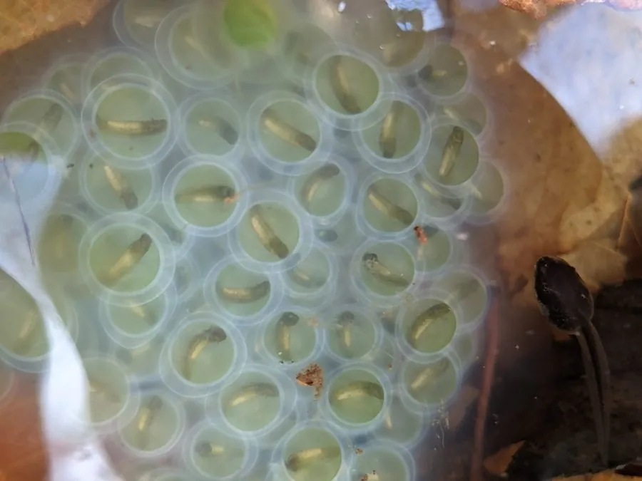

两栖动物 · 动物界
斑点钝口螈 Ambystoma maculatum

北美东部落叶林中的钝口螈，黑色身体上缀有两排黄色圆斑，早春在临时水塘中集体繁殖，卵内还共生着绿藻。
- 分类
- 门脊索动物门纲两栖纲目有尾目科钝口螈科属钝口螈属
- 栖息环境
- 北美东部落叶林的地下洞穴、腐木与临时水塘
- 地理分布
- 加拿大东南部和美国东部
- 保护级别
- IUCN 无危（LC）；非中国原产，在中国无保护级别
物种志
斑点钝口螈体长 15–25 厘米，身体粗壮，皮肤光滑湿润，背面呈黑色、深褐色或灰黑色，背部两侧各有一排醒目的黄色或橙色圆斑，斑点大小和数量因个体而异；腹部灰黑色，四肢短而有力，适合在落叶层中钻行。
它分布于北美洲东部的落叶林，平时在地下洞穴和腐木中生活，早春第一场暖雨后集体迁往临时水塘繁殖。雌螈产下胶质卵块，卵内共生着绿藻，藻类为胚胎提供氧气、吸收二氧化碳，是少见的脊椎动物与藻类共生现象。幼虫在水塘中生活数月，变态后上陆。成年螈以蚯蚓、昆虫和蜗牛为食，对森林土壤生态有重要作用。
形态与习性
- 食性蚯蚓、昆虫和蜗牛
- 体长约 15–25 cm
- 繁殖早春在临时水塘产胶质卵块
- 共生卵内共生绿藻，为胚胎供氧
- 活动节律夜行性，平时在地下活动
- 寿命野外约 20 年
趣味知识
- 斑点钝口螈的卵块里共生着绿藻，藻类能为胚胎提供氧气。
- 早春暖雨后，成百上千只斑点钝口螈会连夜迁往临时水塘繁殖。
- 每只斑点钝口螈的黄色圆斑排列都不一样，可用于个体识别。